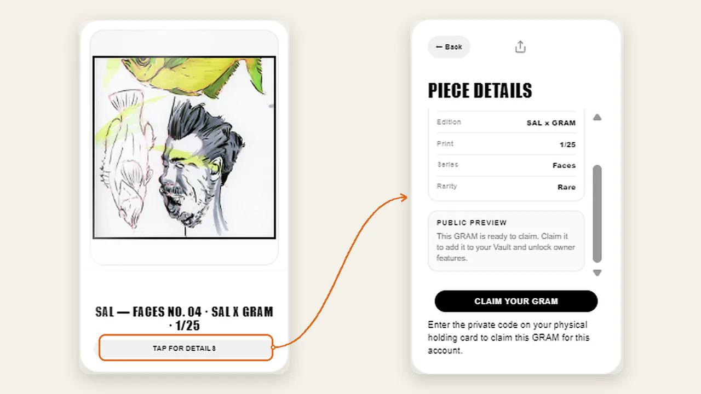
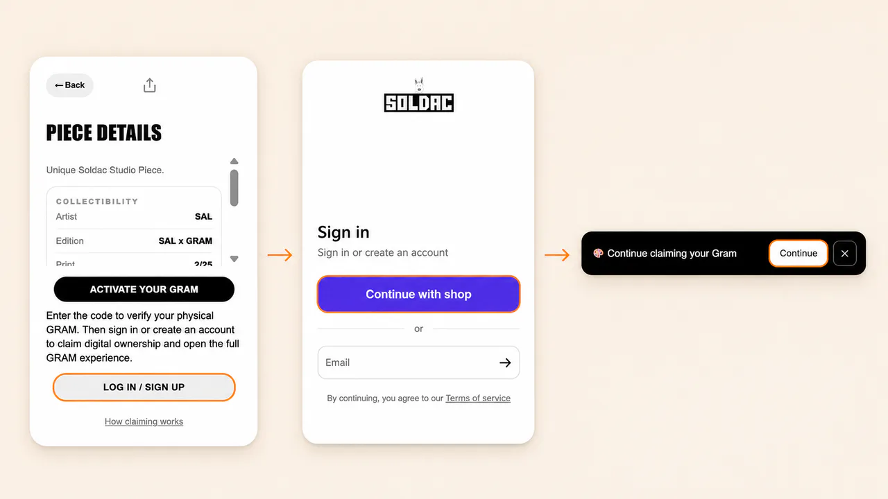
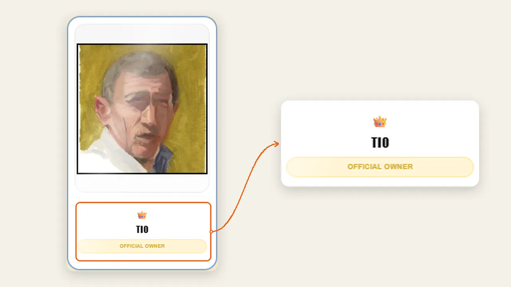
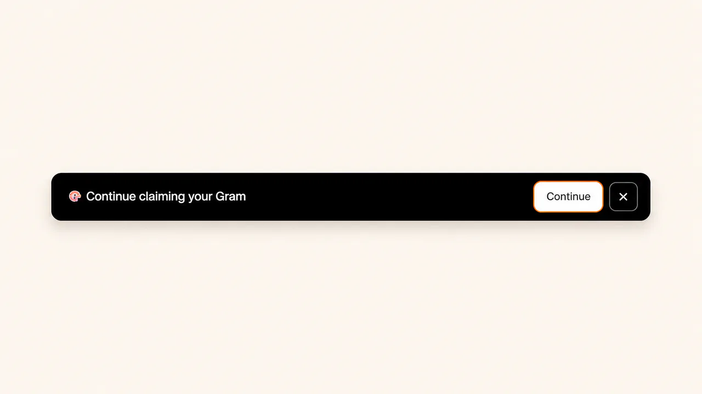

Claim & Propriedade
Como fazer claim da sua GRAM e confirmar se ficou ligada à conta certa.
O que significa fazer claim
Fazer claim liga a GRAM à sua conta na plataforma. Essa ligação é o principal sinal de propriedade digital.
Use a conta correta
Antes de fazer claim, confirme que iniciou sessão com a conta que deve ficar como proprietária da GRAM.
Como funciona
- Abra a experiência da GRAM.
- Inicie sessão, se necessário.
- Conclua o passo de claim apresentado para essa peça.
Depois do claim
Quando o claim é concluído, a GRAM aparece na sua coleção e o estado de proprietário passa a refletir essa ligação.
Antes de começar
Use a GRAM física — fotografias e capturas de ecrã não funcionam. Se o toque não abrir a página, confirme que o NFC está ativo ou leia o QR.
Se não vir o botão de claim
A GRAM pode já ter sido recolhida ou a sessão pode não ter carregado. Confirme o login, atualize uma vez e volte a tocar na peça.
Se o login o levar para outra página
Volte à página inicial e procure “Continuar a fazer claim da sua GRAM”. Se não aparecer, toque novamente na GRAM física.
Se o claim falhar
Atualize uma vez, confirme a sessão e toque novamente na GRAM. Não carregue repetidamente em “Claim”; aguarde um momento antes de tentar outra vez.
Guia visual




